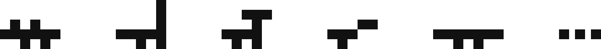

Главным инструментом творчества является эстетика. Эстетика - это необходимое достаточное для выражения идеи. В своих работах я старался придерживаться этого принципа.
Инсталляция


Инсталляция представлена трех метровой конструкции в виде куба. Уголки из нержавеющей стали покрыты специальной светоотражающей краской. Отдельный источник света делает акцент на рамках, которые никак не ограничивают воздух внутри арт-объекта. Данная работа служит напоминанием, что мы по своей сути всегда свободны, а ограничения условны.
Коллекция


В раннем детстве я был восхищен динозаврами. Я не понимал какова причина этого восхищения. Все виды смотрелись целостно, но при этом каждый обладал уникальными качествами, оптимальными для эффективного выживания в своей среде.
Как и с динозаврами, каждая картина из коллекции самодостаточна, но только при рассмотрении их как целого, можно увидеть систему. В данных работах я постарался максимально передать это чувство неотделимости всего индивидуального от целого.
По всем вопросам и предложениям обращайтесь по электронной почте sashakosyak@yahoo.com